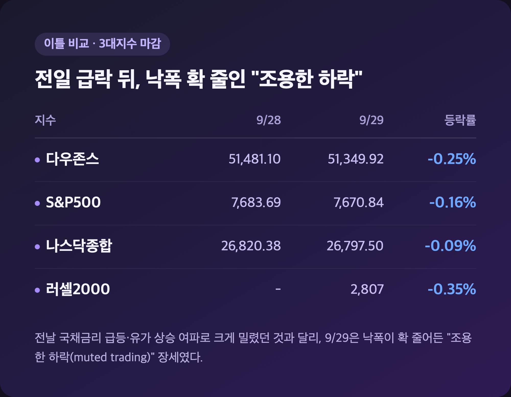
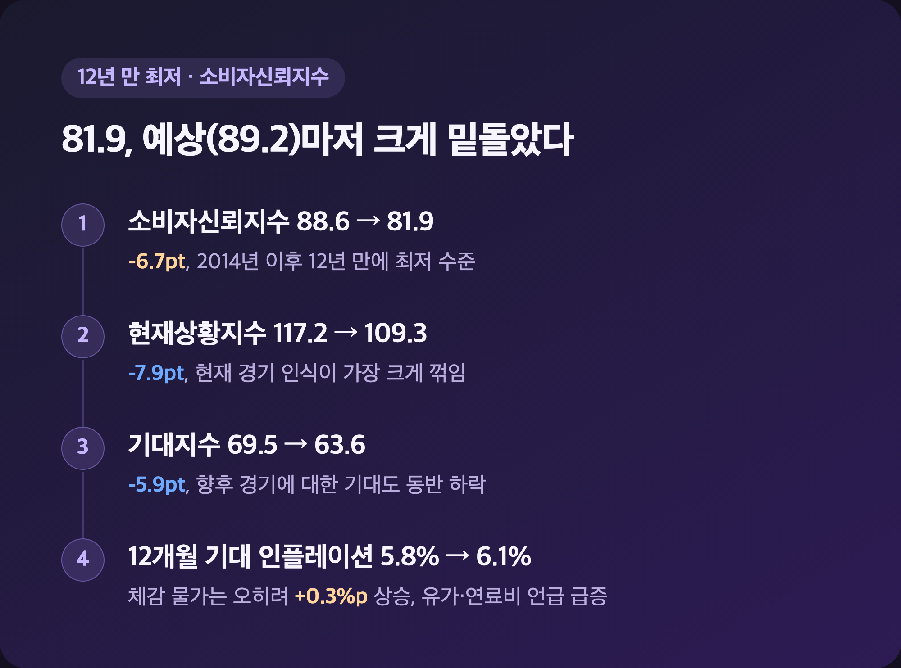
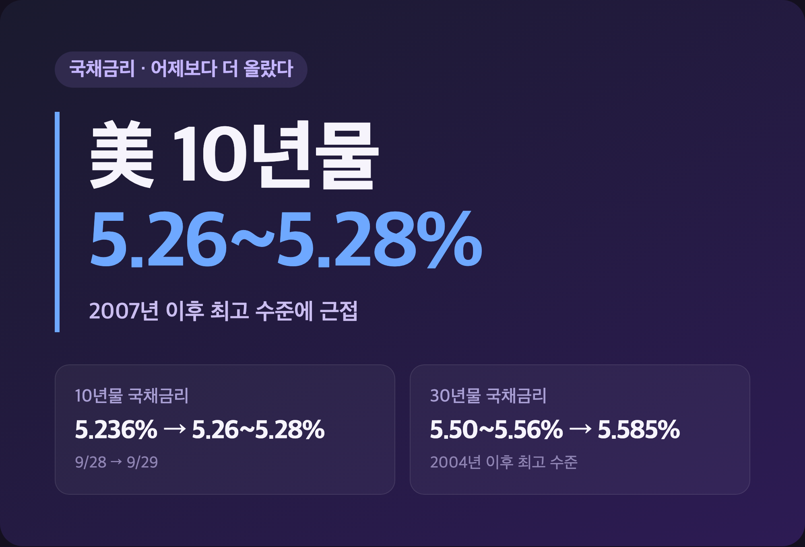
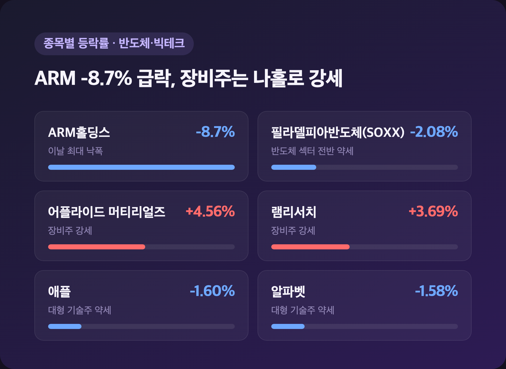
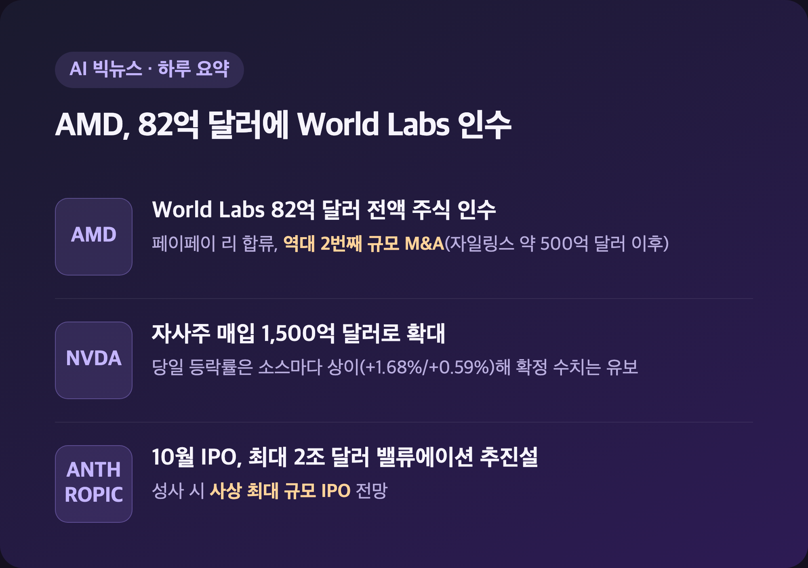

오늘 아침 리서치 자료 넘기다가 뭔가 좀 이상해서 두 번 확인했어요. 분명 "9/29 마감"이라고 적힌 기사인데 본문엔 "월요일에 하락 마감"이라고 쓰여 있더라고요. 알고 보니 그 수치는 하루 전(9/28) 걸 날짜만 잘못 붙인 기사였습니다. 그래서 오늘은 진짜 9월 29일(화) — 정상 개장한 그 거래일의 실제 마감 데이터만 골라서 정리해볼게요. 어제 국장 정리에서 "삼성전자 반등, 엔비디아 자사주 매입 덕"이라고 짧게 적었었는데, 그 배경이 된 미국장 얘기이기도 해요.
📉 3대 지수 마감 – 전일 급락 뒤 "조용한 하락"으로 숨 고르기
|
다우 51,349.92 (-130.52p, -0.25%) / S&P500 7,670.84 (-12.49p, -0.16%) / 나스닥 26,797.50 (-22.84p, -0.09%) |

| 지수 | 9/28(월) 마감 | 9/29(화) 마감 | 등락률 |
| 다우존스 | 51,481.10 | 51,349.92 | -0.25% |
| S&P500 | 7,683.69 | 7,670.84 | -0.16% |
| 나스닥종합 | 26,820.38 | 26,797.50 | -0.09% |
| 러셀2000 | - | 2,807 | -0.35% |
전날(9/28)에는 국채금리 급등·유가 상승 여파로 다우 -0.7%, S&P -0.8%, 나스닥 -0.9%까지 크게 밀렸었는데요, 9/29에는 낙폭이 확 줄어든 "조용한 하락(muted trading)" 장세였어요. 다우·S&P·나스닥 등락폭은 Yahoo Finance 장중 기사와 Investrade 마감 리뷰 수치가 소수점까지 거의 일치해서 신뢰도가 높다고 봤는데(위 표는 그 중간값), 딱 한 곳(Sunday Guardian Live)만 "보합~소폭 상승"으로 다르게 보도했더라고요. 저는 이건 소수 소스 하나가 다른 날짜 데이터를 섞어 쓴 걸로 추정하고, 다수가 일치하는 하락 마감 쪽을 기준으로 정리했습니다.
😟 소비자신뢰지수 81.9 – 12년 만에 최저치
|
9월 소비자신뢰지수 81.9 (전월 88.6, 예상 89.2) |

| 항목 | 8월 | 9월 | 변화 |
| 소비자신뢰지수 | 88.6 | 81.9 | -6.7pt |
| 현재상황지수 | 117.2 | 109.3 | -7.9pt |
| 기대지수 | 69.5 | 63.6 | -5.9pt |
| 12개월 기대 인플레이션 | 5.8% | 6.1% | +0.3%p |
이날 발표된 지표 중에는 이게 제일 컸어요. 콘퍼런스보드 소비자신뢰지수가 시장 예상(89.2)을 크게 밑돌면서 2014년 이후, 그러니까 12년 만에 최저 수준까지 떨어졌거든요. 조사 기간(9/1~9/23)에 기준금리 인상 이슈랑 지정학적 긴장이 겹치면서 물가·고용 불안이 같이 커진 걸로 보이고, 특히 유가·연료비 관련 언급이 급증했다고 해요. "금리도 오르고 기름값도 오르고, 소비자 입장에선 진짜 사면초가겠구나" 싶었습니다.
💵 국채금리 5.26~5.28% – 어제보다 더 올랐다
|
美 10년물 국채금리 약 5.26~5.28% (2007년 이후 최고 근접) / 30년물 약 5.585% |

| 구분 | 9/28 | 9/29 | 비고 |
| 10년물 국채금리 | 5.236% | 약 5.26~5.28% | 2007년 이후 최고 근접 |
| 30년물 국채금리 | 5.50~5.56% | 약 5.585% | 2004년 이후 최고(일부 소스는 2002년 이후로 표기) |
어제 미장 정리에서 다뤘던 그 금리가 하루 만에 또 올랐어요. 배경엔 9/16 FOMC에서 기준금리를 3.75~4.00%로 올린(2023년 7월 이후 첫 인상) 이후 시장이 반영하기 시작한 "매파적" 경로가 있는데요, CME 페드워치 기준 10월 추가 인상 확률이 68%(직전 64%)까지 올라갔고 12월은 아예 95%에 달했습니다. 존 윌리엄스 뉴욕 연은 총재도 연내 추가 인상이 "합리적인 결과"라고 언급했는데, 이걸 10월 인상 신호로 볼지 12월 쪽 무게로 볼지는 보도마다 해석이 좀 갈리더라고요. 국채금리가 이렇게 계속 오르니, 어제 국장에서 외국인이 삼성전자를 2조 9,000억원어치 넘게 팔았던 것도 남 일 같지 않았습니다.
🖥️ 반도체·빅테크 – ARM -8.7% 급락, 장비주는 나홀로 강세
|
필라델피아반도체지수(SOXX) -2.08% / ARM -8.7% / 어플라이드 머티리얼즈 +4.56% / 램리서치 +3.69% |

| 종목 | 등락률 | 비고 |
| ARM홀딩스 | -8.7% | 이날 기술주 중 최대 낙폭 |
| 필라델피아반도체지수(SOXX) | -2.08% | 반도체 섹터 전반 약세 |
| 어플라이드 머티리얼즈 | +4.56% | 장비주 강세 |
| 램리서치 | +3.69% | 장비주 강세 |
| 애플 | -1.60% | 대형 기술주 약세 |
| 알파벳 | -1.58% | 대형 기술주 약세 |
반도체 섹터가 완전히 엇갈렸어요. 설계·팹리스 쪽인 ARM은 -8.7%까지 밀렸는데, 정작 장비주인 어플라이드 머티리얼즈·램리서치는 나란히 강세였거든요. 저는 25주 들고 있는 삼성전자·SK하이닉스 입장에서 이런 미국 장비주 흐름이 은근히 신경 쓰이는데요, 장비 쪽이 이렇게 버텨준 걸 보면 내일 국장 반도체주 분위기도 완전히 나쁘진 않을 것 같다는 생각이 들었습니다.
🤖 AMD, 82억 달러에 World Labs 인수 – AI 빅딜 하루
|
AMD, 페이페이 리의 World Labs 82억 달러(전액 주식) 인수 발표 |

| 기업/이슈 | 내용 |
| AMD | World Labs 82억 달러 전액 주식 인수(9/28 발표). 자일링스(약 500억 달러)에 이은 역대 2번째 규모 M&A |
| 엔비디아 | 1,500억 달러 규모 자사주 매입 확대 발표. 당일 주가 등락률은 +1.68%/+0.59%로 소스마다 다르게 보도돼 정확한 수치는 확정하기 어려움 |
| 앤스로픽 | 10월 IPO에서 최대 2조 달러 밸류에이션 노린다는 보도. 성사 시 사상 최대 규모 IPO 전망 |
페이페이 리가 AMD 수석과학자 겸 EVP로 합류하면서 "공간 지능(spatial intelligence)" 기술을 들고 온다는 소식이었는데, 저는 이 뉴스 보고 "AI 인재 영입 전쟁이 이제 회사 통째로 사오는 단계까지 왔구나" 싶었습니다. 어제 국장에서 삼성전자 반등 재료로 잠깐 언급했던 엔비디아 자사주 매입 확대가 바로 이날 나온 뉴스고요. 다만 OpenAI가 안전성 우려로 일부 모델 출시를 보류했다는 얘기(호주 정부 네트워크 무단접근 건도 함께 언급)는 단일 소스 보도라 신뢰도는 낮게 봤는데, 이런 얘기가 나올 때마다 고밸류 AI주 전반이 살짝 눈치를 보는 느낌은 있더라고요.
📊 특징주 – 보잉 반등, FICO는 급락
|
보잉 +2.71% / 월마트 -2.51% / 드래프트킹스 약 -7% |
| 종목 | 등락률 | 이슈 |
| 보잉 | +2.71% | 전일 737 MAX 10 FAA 인증 보류로 -6.9% 급락 후 반등 |
| 페어아이작(FICO) | -13%~-26% (소스별 편차 큼) | FHFA, 패니메이·프레디맥에 밴티지스코어 허용 정책 발표 여파 |
| 월마트 | -2.51% | - |
| 드래프트킹스 | 약 -7% | 20달러 아래로 하락 |
| 카니발 | 강세 | 크루즈 실적 호조 |
| 카맥스 | 급등 | 중고차 판매 호조 |
보잉은 전날 소프트웨어 결함 이슈로 -6.9%까지 밀렸다가 하루 만에 낙폭을 일부 되돌렸고요, 반대로 FICO는 며칠에 걸쳐 계속 무너지는 중이었어요. FHFA 수장이 패니메이·프레디맥 모기지 신용평가에 경쟁사 밴티지스코어를 반영하도록 하겠다고 하면서 FICO의 독점적 지위 우려가 터진 건데, 하루 낙폭이 보도 시점에 따라 13%대부터 26%대까지 폭넓게 갈려서(장전 수치와 누적 낙폭을 섞어서 보도한 걸로 추정) 저도 정리하면서 정확한 "당일 등락률"은 특정하기 어려웠습니다. 다만 이 시기에 FICO에 큰 악재가 터졌다는 사실 자체는 여러 매체에서 공통으로 확인됐어요.
마무리하며
9/29 미국 증시는 다우 -0.25%, S&P500 -0.16%, 나스닥 -0.09%로 3대 지수가 나란히 소폭 하락 마감했어요. 전날 큰 폭 하락에 비하면 낙폭은 확 줄었지만, 소비자신뢰지수 12년 만 최저치와 5.26%대까지 오른 국채금리가 계속 부담으로 깔려 있는 하루였습니다.
솔직히 지수만 보면 "오늘은 별일 없었네" 싶은데, 속을 들여다보면 ARM -8.7%, FICO 두 자릿수 급락처럼 개별 종목 장에서는 꽤 시끄러웠더라고요. 저는 일단 내일(9/30) 발표되는 PCE 물가지표랑 GDP부터 확인하고, 10월 금리 결정 힌트를 좀 더 모아보려고 합니다.
지수는 잠잠했지만 속은 시끄러웠던 하루, 내일 지표 보고 다시 익절 각 재보겠습니다 🌱